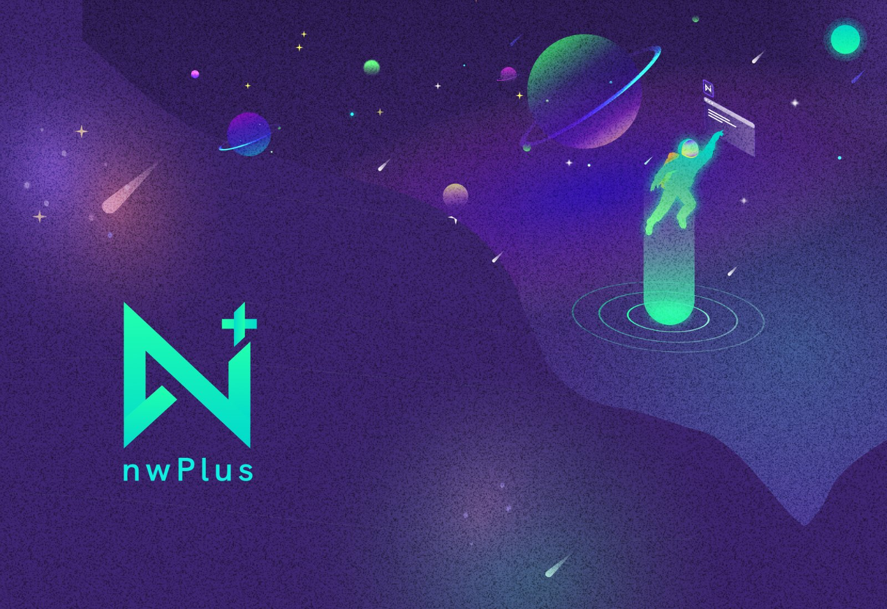

nwPlus
Driving design for Western Canada's largest hackathons.

Driving design for Western Canada's largest hackathons.
A cleaner evaluation system for hackathon projects, built to simplify scoring and reduce decision friction.
Case study currently in progress.
Case study currently in progress.
Hi, I'm Elaine!
I’m a designer at heart — shaped by years of curiosity and hands-on experimentation with both digital and analog tools. I started by creating logos and profile pictures for Instagram influencers, then expanded into customizing shoes, making posters, and digital illustration.
I used to think that design was just about making things beautiful, but now I get to solve problems too! I love the process because I get to work at the intersection of research, human-centered thinking and creativity.
Outside of design, I’m usually exploring vintage markets, gaming, practicing yoga, or catching a DJ set ✦.